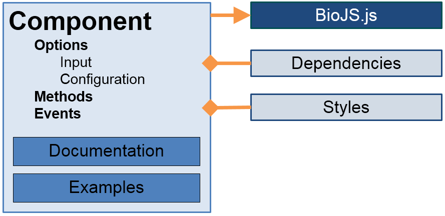
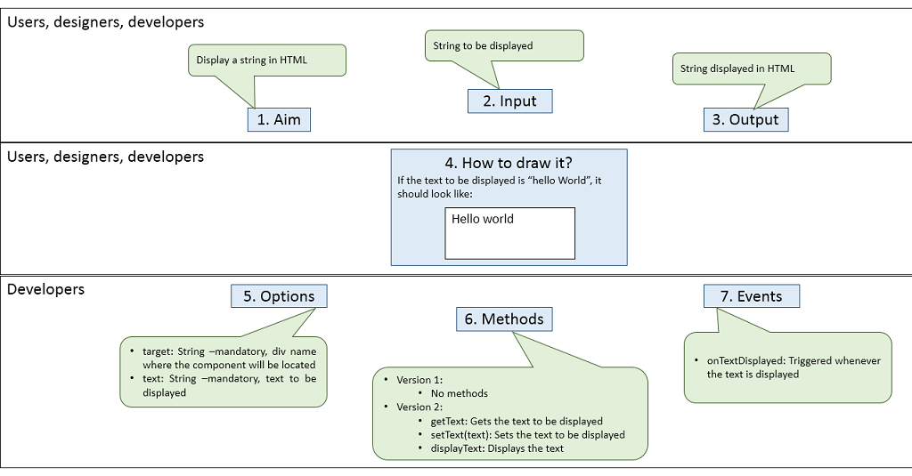
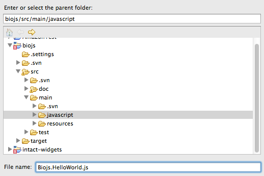

Implementing a HelloWorld component
This tutorial shows how to create a basic component HelloWorld, following the guidelines defined by
the Biojs specification.

Requirements and recommendations
To follow this tutorial you will need to download the BioJS source code and place it on a web server folder
Tutorial
Step 1
Before starting coding, Biojs specification recommends to fill a requirements document.
We recommend you to take a look to our graphical version before going further (show/hide).

Step 2
Create an empty file named Biojs.MyHelloWorld.js into directory biojs/src/main/javascript.
Note: Biojs.HelloWorld.js already exists in the repository as an example, please create your own file
Biojs.MyHelloWorld.js

Step 3
Now you can copy this template (show/hide) so you will
have the basic structure of any component, including some comments to help you to understand what things are about.
Biojs.MyHelloWorld = Biojs.extend ({
constructor: function (options) {
/* Your constructor code here
Note: options provided on instantiation time overrides the
default values in this.opt, automatically; i.e. 'options'
argument refers to the provided values and 'this.opt'
refers to the the overridden options. For more details,
go to section 6.3.2 in the spec. doc. */
},
opt: {
/* Target DIV
This mandatory parameter is the identifier of the DIV tag where the
component should be displayed. Use this value to draw your
component into. */
target: "YourOwnDivId"
/* Component Options
These options defines the input data for your component.
Must have a default value for each one. Note that, either some or
all of values might be replaced by the constructor using the values
provided in instantiation time.
Define your own options here following the next syntax:
<option1>: <defaultValue1>,
<option2>: <defaultValue2>,
...
<optionN>: <defaultValueN> */
},
eventTypes: [
/* Event Names
The parent class Biojs build the event handlers automatically
with the names defined here. Use this.raiseEvent(<eventName>,
<eventData>) for triggering an event from this component. Where,
<eventName> is a string (defined in eventTypes) and <eventData> is
an object which should be passed to the registered listeners.
Define your event names following the syntax:
<eventName1>,
<eventName2>,
...
<eventNameN>
*/
],
/* Your own attributes
_<attrName1>: <defaultValueAttr1>,
_<attrName2>: <defaultValueAttr2>,
...
_<attrNameN>: <defaultValueAttrN>,
Example:
_PI: 3.1415, */
/* Your own 'PUBLIC' methods
<methodName1>: function (<argsMethod1>) {<codeOfMethod1>},
<methodName2>: function (<argsMethod2>) {<codeOfMethod2>},
...
<methodNameN>: function (<argsMethodN>) {<codeOfMethodN>}
Example:
square: function(number) { return number*number }
/* Your own 'PROTECTED' methods
Javascript does not provides visibility mechanism for class members.
Use character '_' to identify the private members of your component.
For example: '_initialize'.
NOTE: use this.base(arguments) to invoke parent's method if apply.
*/
});
Step 4
Remove unnecessary comments so you will get a clean template, ready for you to add your own code!
(show/hide)
Biojs.MyHelloWorld = Biojs.extend ({
constructor: function (options) {
},
opt: {
target: "YourOwnDivId"
},
eventTypes: [
],
_text: ""
});
Step 5
Add some comments to the component so future developers will know about purpose, author,
dependencies, and options. Biojs follows a structured and specific way for comments, so you may want to take a look
to any of the components of Biojs, for instance Biojs.HelloWorld. Additions/changes to the previous code are in bold blue.
(show/hide)
Step 6
Now it is time to code! All our code by now will be in the constructor.
- Create a self reference var self = this;
- Get the container div element (either with jQuery or with document.getElementById)
- Use an element in the options called 'text' and save it to an attribute called '_text'
- Append a span to the container with the text from the options
Additions/changes to the previous code are in bold blue. (show/hide)
/**
*
* Tutorial component which takes a text and displays it as a span HTML element.
*
* @class
* @extends Biojs
*
* @author <a href="mailto:MyEmail@my.email">My Name</a>
* @version 1.0.0
* @category 0
*
* @requires <a href='http://code.jquery.com/jquery-1.7.2.min.js/'>jQuery Core 1.7.2</a>
* @dependency <script language="JavaScript" type="text/javascript" src="../biojs/dependencies/jquery/jquery-1.7.2.min.js"></script>
*
* @param {Object} options An object with the options for this component.
*
* @option {string} target
* Identifier of the DIV tag where the component should be displayed.
*
* @option {string} [text="Hello!"]
* String to be displayed by the component.
*
* @example
* var instance = new Biojs.MyHelloWorld({
* target: "YourOwnDivId",
* text: 'Hello to my world!'
* });
*
*/
Biojs.MyHelloWorld = Biojs.extend (
/** @lends Biojs.MyHelloWorld# */
{
/**
* Constructor to initialize the component
* @name Biojs.MyHelloWorld-constructor
*/
constructor: function (options) {
// In JavaScript 'this' always refers to the 'owner' of the function
// we're executing (http://www.quirksmode.org/js/this.html)
// Let's preserve the reference to 'this' through the variable self. In
// this way, we can invoke/execute
// our component instead of the object where 'this' is being
// invoked/executed.
var self = this;
// For practical use, create an object with the main DIV container
// to be used in all of the code of our component
this._container = jQuery("#"+self.opt.target);
//Move the options to your model
this._text = options.text;
//display the model, i.e., text
this._container.append('' + this._text + '');
},
/**
* Default values for the options
* @name Biojs.MyHelloWorld-opt
*/
opt: {
target: "YourOwnDivId"
},
/**
* Array containing the supported event names
* @name Biojs.ProteinPortafolio-eventTypes
*/
eventTypes: [
],
//Your own attributes
_text: ""
});
Step 7
You can give it a try now to see how it looks in a browser create a playground HTML page.
- Create an HTML page called "TestMyHelloWorld.html" inside the test folder "biojs/src/test/javascript/"
- Add a div element called 'YourOwnDivId'
- Add dependencies to javascripts Biojs, Biojs.MyHelloWorld, and jquery-1.7.2
(optional, only required if you used jQuery selectors instead document.getElementId)
- If you used a dependency to jQuery, you better add a no conflict statement
- Add a window.onload function
- In the window.onload function, instantiate the MyHelloWorld component, use 'Hello World' as the 'text' in
the options
- Try it now!
Your HTML page should look like (show/hide)
<html>
<head>
<title>Biojs.MyHelloWorld test</title>
<script type="text/javascript" src="../../main/javascript/Biojs.js"></script>
<script type="text/javascript" src="../../main/javascript/Biojs.MyHelloWorld.js"></script>
<script type="text/javascript" src="../../main/resources/dependencies/jquery/jquery-1.7.2.min.js"></script>
<script type="text/javascript">
jQuery.noConflict();
</script>
<script type="text/javascript">
var instance;
window.onload = function() {
instance = new Biojs.MyHelloWorld({
target : "YourOwnDivId",
text: "Hello World"
});
};
</script>
</head>
<body>
<div id="YourOwnDivId" ></div>
</body>
</html>
Step 8
Now we can add some methods and events, for instance:
- Add a getter and setter for the text
- Create a method to display the text
- Create an event 'onTextDisplayed' triggered whenever a text is displayed
- Do not forget to add an example for the methods and events
- Do not forget to trigger the event in the method dislaying the text, use raiseEvent from Biojs
- Try it now! Use the same HTML that you used in Stpe 6
It all should look like (show/hide).
Additions/changes to the previous code are in bold blue.
/**
*
* Tutorial component which takes a text and displays it as a span HTML element.
*
* @class
* @extends Biojs
*
* @author <a href="mailto:MyEmail@my.email">My Name</a>
* @version 1.0.0
* @category 0
*
* @requires <a href='http://code.jquery.com/jquery-1.7.2.min.js/'>jQuery Core 1.7.2</a>
* @dependency <script language="JavaScript" type="text/javascript" src="../biojs/dependencies/jquery/jquery-1.7.2.min.js"></script>
*
* @param {Object} options An object with the options for this component.
*
* @option {string} target
* Identifier of the DIV tag where the component should be displayed.
*
* @option {string} [text="Hello!"]
* String to be displayed by the component.
*
* @example
* var instance = new Biojs.MyHelloWorld({
* target: "YourOwnDivId",
* text: 'Hello to my world!'
* });
*
*/
Biojs.MyHelloWorld = Biojs.extend (
/** @lends Biojs.MyHelloWorld# */
{
/**
* Constructor to initialize the component
* @name Biojs.MyHelloWorld-constructor
*/
constructor: function (options) {
// In JavaScript 'this' always refers to the 'owner' of the function
// we're executing (http://www.quirksmode.org/js/this.html)
// Let's preserve the reference to 'this' through the variable self. In
//this way, we can invoke/execute
// our component instead of the object where 'this' is being
// invoked/executed.
var self = this;
// For practical use, create an object with the main DIV container
// to be used in all of the code of our component
this._container = jQuery("#"+self.opt.target);
//Move the options to your model
this.setText(options.text);
//display the model, i.e., text
this.displayText();
},
/**
* Default values for the options
* @name Biojs.MyHelloWorld-opt
*/
opt: {
target: "YourOwnDivId"
},
/**
* Array containing the supported event names
* @name Biojs.MyHelloWorld-eventTypes
*/
eventTypes: [
/**
* @name Biojs.MyHelloWorld#onTextDisplayed
* @event
* @param {function} actionPerformed A function which receives a {@link Biojs.Event} object as argument.
* @eventData {Object} source The component which triggered the event.
* @example
* instance.onTextDisplayed(
* function( obj ) {
* alert(obj);
* }
* );
*
* */
"onTextDisplayed"
],
_text: "",
_container: undefined,
//public methods
/**
* Getter for the text,
*
* @example
* instance.getText();
*/
getText: function() {
return this._text;
},
/**
* Setter for the text,
* @param {string} text Input text.
* @example
* instance.setText("A refreshed hello world!");
*/
setText: function(text) {
this._text = text;
},
/**
* Displays the text in a span HTML element,
* @example
* instance.displayText();
*/
displayText: function() {
this._container.html('<span>' + this.getText() + '</span>');
this.raiseEvent("onTextDisplayed", this.getText());
}
});
Step 9
Your component is ready, so you can take a look on how it would look in the BioJS registry.: